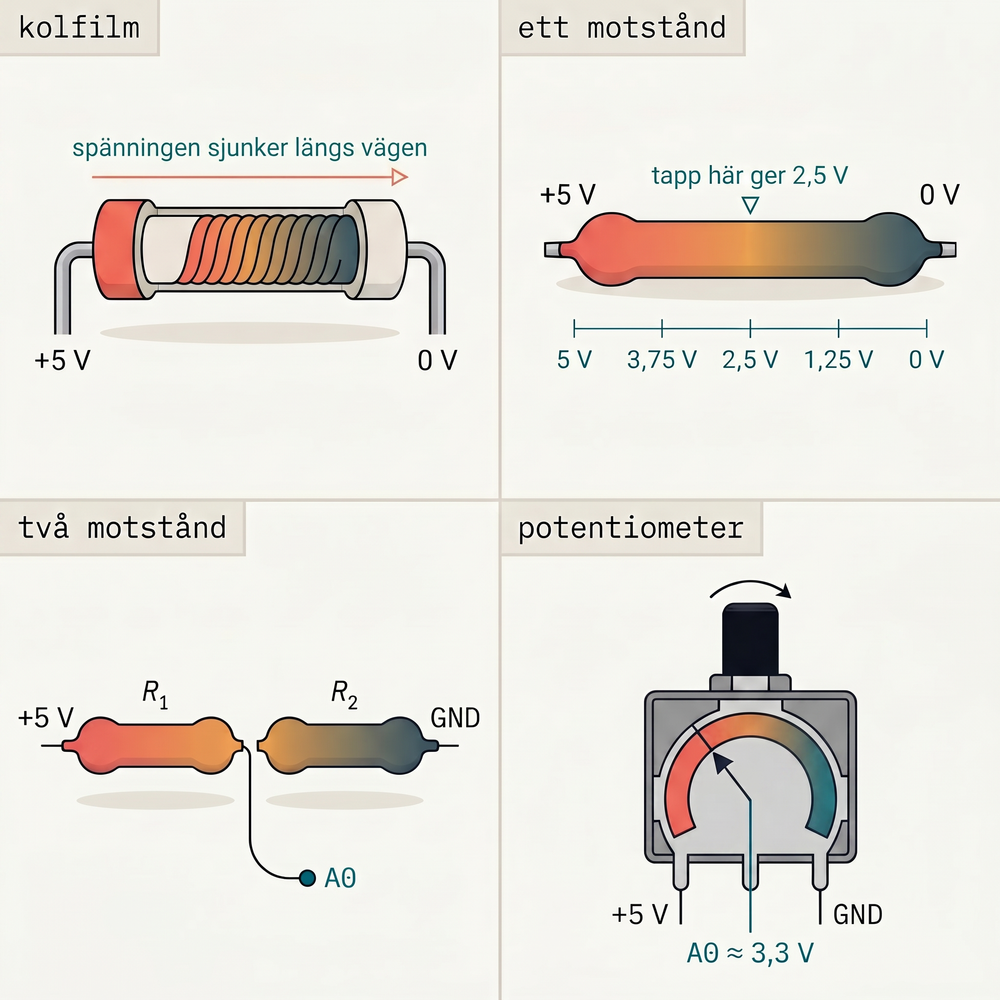
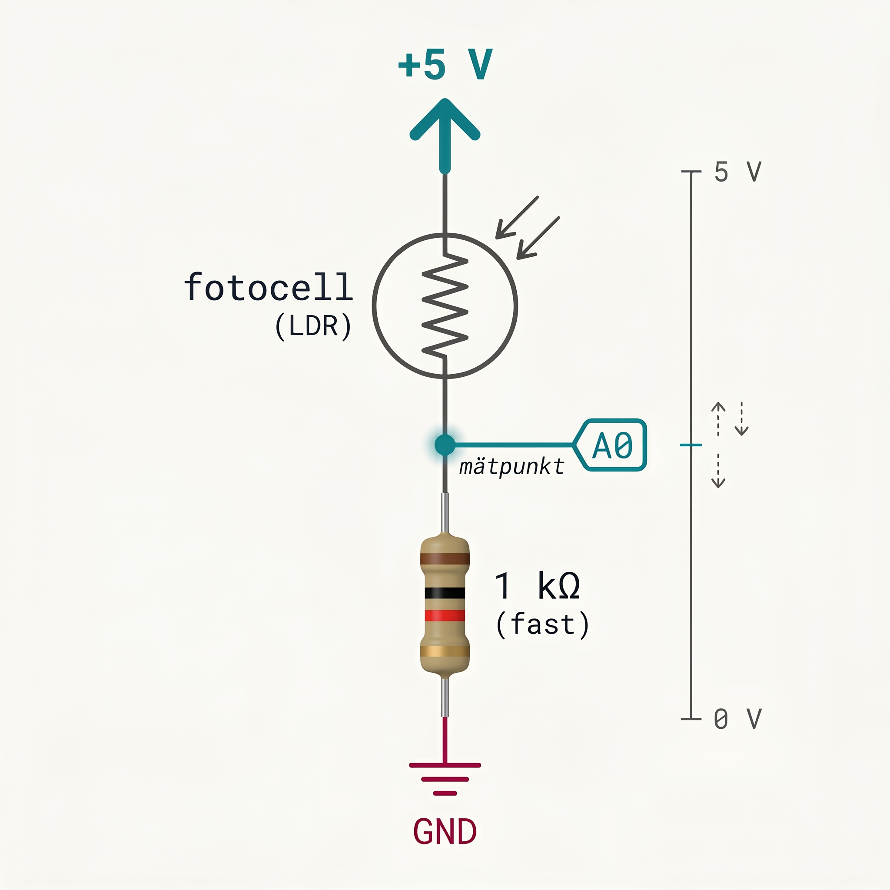
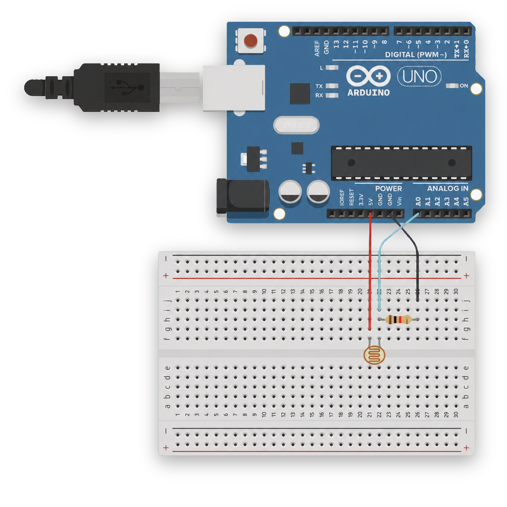
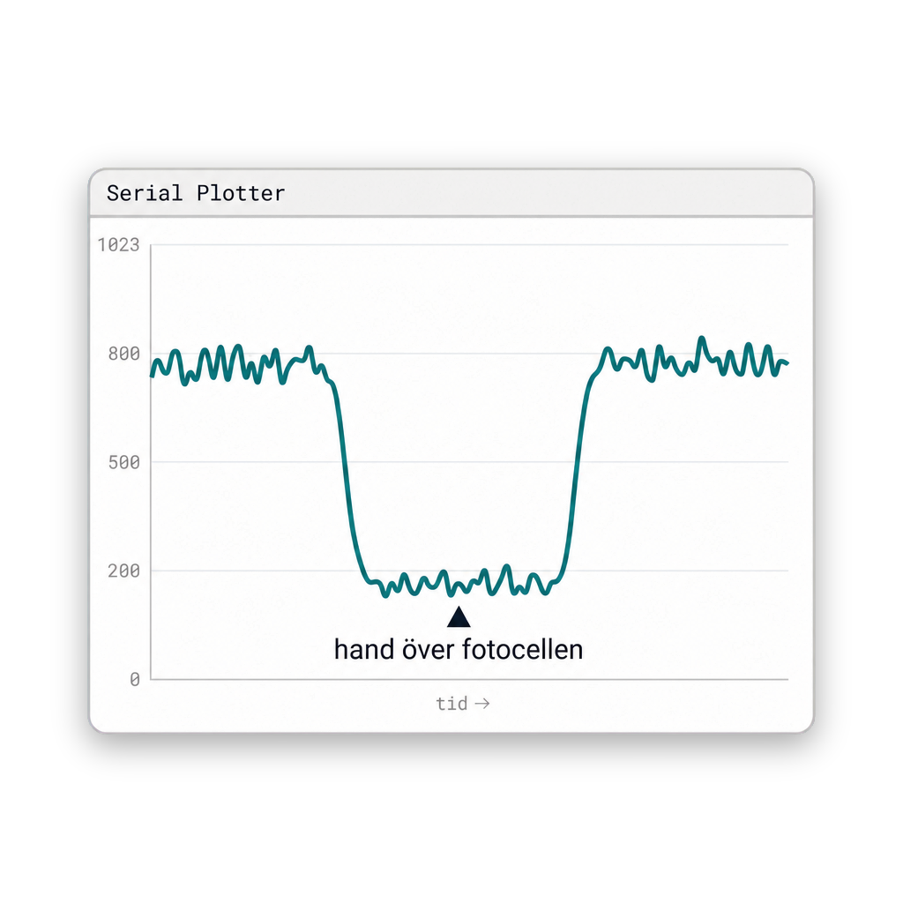
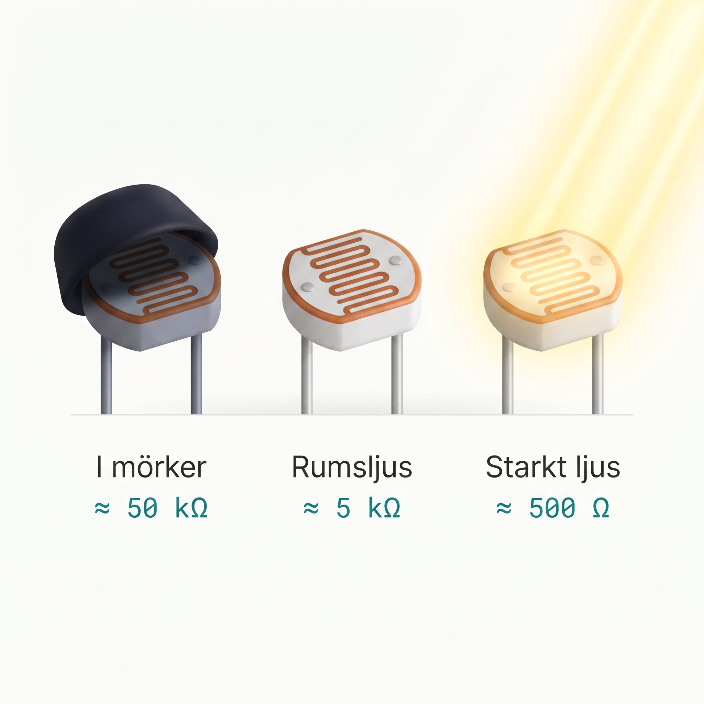
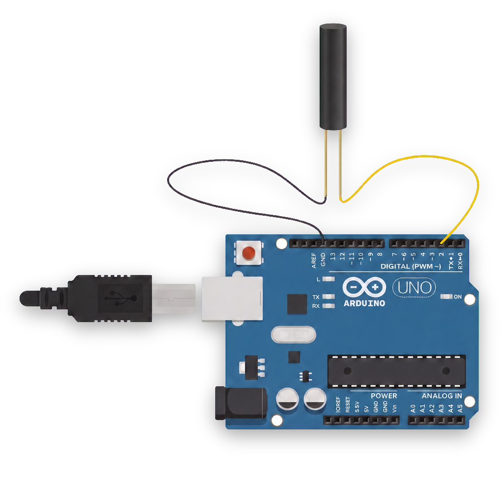

Analog input
Knappen var digital. Världen är analog. analogRead, spänningsdelare, fotocell,
tilt-sensor — och Serial Monitor som fönster in i vad Arduinon faktiskt mäter.
Vad du lärde dig
Träff 4 i konkreta byggstenar:
analogRead — 0 till 1023
Arduinons analog-till-digital-omvandlare. 0 V → 0, 5 V → 1023. Bara på pinnarna A0–A5.
Serial.begin(9600) + Serial.println(...) = fönster in i vad koden tänker. Plotter ritar samma data som rörlig kurva.
Spänningsdelaren — kärnkonceptet
Tänk på två motstånd som ett långt motstånd, brutet i mitten. Strömmen kämpar sig igenom — och spänningen sjunker linjärt längs vägen. Mätpunkten mellan dem ger en spänning som beror på förhållandet mellan de två. Byter du den ena mot en fotocell, så ändras spänningen i takt med ljuset.



Läs av fotocellen
Den första analog-read-sketchen. Öppna Verktyg → Serial Monitor (eller förstoringsglaset uppe till höger i IDE:n) — och håll handen över fotocellen. Siffrorna ändras i realtid.
const int ldrPin = A0;
void setup() {
Serial.begin(9600);
}
void loop() {
int ljus = analogRead(ldrPin);
Serial.println(ljus);
delay(100);
}
För att se signalen som kurva istället för rader av siffror: Verktyg → Serial Plotter. Samma data, annan visualisering.


Lampa som tänds när det blir mörkt
Första kombinationen av sensor + beslut + utgång. Läs ljuset, jämför med en tröskel, tänd LED:en om
det är mörkare än så. Tröskelvärdet beror på rummet — kör photocell-read.ino först och
hitta ditt eget värde.
const int ldrPin = A0;
const int morkTroskel = 300;
void setup() {
Serial.begin(9600);
pinMode(LED_BUILTIN, OUTPUT);
}
void loop() {
int ljus = analogRead(ldrPin);
Serial.print("ljus=");
Serial.println(ljus);
if (ljus < morkTroskel) {
digitalWrite(LED_BUILTIN, HIGH); // mörkt → tänd
} else {
digitalWrite(LED_BUILTIN, LOW);
}
delay(100);
}
Tilt-sensorn
Tilt-sensorn är digital, inte analog — den läses precis som knappen. Inuti sitter en liten metallboll i en hylsa. Står sensorn rätt upp ligger bollen mot två stift och sluter kretsen → digitalRead ger LOW (med INPUT_PULLUP). Lutar du sensorn rullar bollen iväg → kretsen bryts → HIGH.

const int ldrPin = A0;
const int tiltPin = 2;
void setup() {
Serial.begin(9600);
pinMode(tiltPin, INPUT_PULLUP);
}
void loop() {
int ljus = analogRead(ldrPin);
int tilt = digitalRead(tiltPin); // HIGH = upprätt, LOW = lutad
Serial.print("ljus=");
Serial.print(ljus);
Serial.print(" tilt=");
Serial.println(tilt);
delay(100);
}
Serial.print(...) för alla utom det sista, som blir Serial.println(...). print = ingen radbrytning. println = radbrytning.